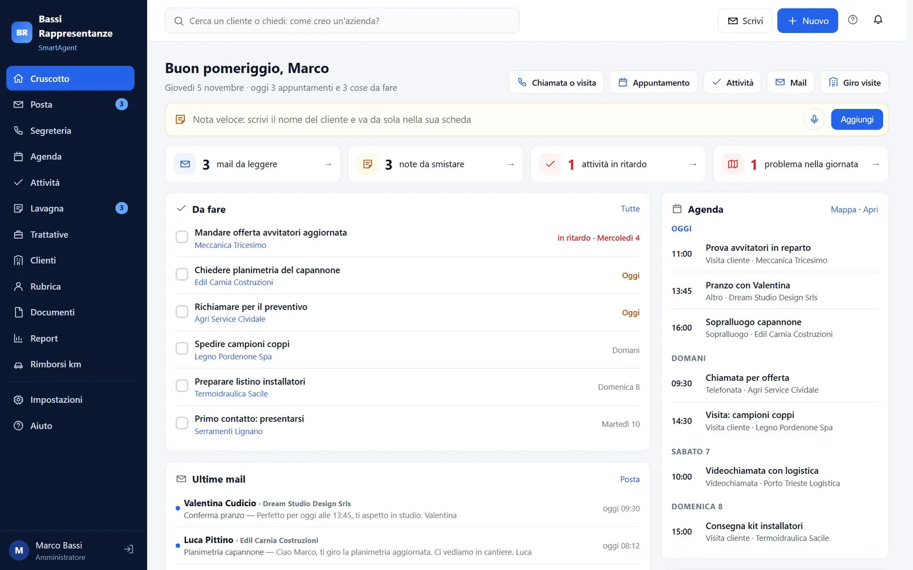
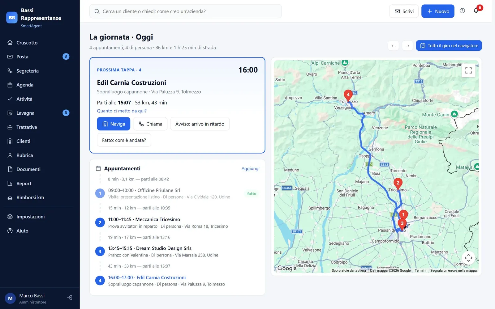

Informazioni sparse
Mail, agenda, rubrica del telefono, Excel e foglietti: per sapere a che punto sei con un cliente devi cercare in cinque posti.
Prodotto · Gestionale per professionisti e agenti
SmartAgent riunisce clienti, mail, appuntamenti, giro visite, pratiche, preventivi, fatture, documenti e spese in un'unica app che si aggiorna da sola. Colleghi posta, calendario e rubrica che usi già: le mail vanno nella scheda giusta, la giornata si organizza sulla mappa e il lavoro fatto diventa preventivo, fattura e rimborso senza ricopiare niente. A breve SmartAgent Drive: archivio e backup dei file del PC, già divisi per cliente.
Il problema
Mail, agenda, rubrica del telefono, Excel e foglietti: per sapere a che punto sei con un cliente devi cercare in cinque posti.
Appuntamenti da incastrare, strada da calcolare, esiti da scrivere la sera quando non te li ricordi più.
Preventivi, fatture, chilometri e note spese rifatti su altri programmi, ricopiando quello che c'è già.
Il cruscotto

Cosa comprende
Ogni mail, anche PEC, finisce da sola nella scheda del cliente; gli allegati dei clienti vanno nei suoi documenti.
La giornata sulla mappa, tempi di viaggio con il traffico previsto, «parti adesso» e messaggio di ritardo già scritto.
Trattative, incarichi, commesse o fascicoli con fasi, liste di controllo, ore e promemoria.
Preventivi accettati online dal cliente, fatture con acconti e saldi, collegamento con Fatture in Cloud.
Versioni, testo letto anche dalle scansioni e ricerca nel contenuto; il documento va da solo al cliente giusto.
Scrivi o detti due righe dopo la visita: la nota trova da sola il cliente.
Rimborsi calcolati dal giro della giornata, scontrini letti dalla foto.
Un link privato per ogni cliente: stato dei lavori, appuntamenti, preventivi, fatture e documenti.
Più utenti, attività e pratiche passate tra colleghi, pratiche riservate, calendario di ognuno sul suo telefono.
Per chi
Scegli il mestiere: parole, campi, fasi e stampe si adattano, e il titolare cambia il modello quando vuole.
Mandanti, listini, ordini e provvigioni; zone e obiettivi del mese.
Incarichi, sopralluoghi e verbali con firma sul posto, foto e documenti della compagnia.
Commesse e pratiche edilizie con fasi, versioni delle tavole e PEC.
Impianti, contratti periodici, rapportini, magazzino dei furgoni e garanzie.
Ispezioni, non conformità e corsi di formazione con attestati in scadenza.
Fascicoli, udienze, aiuto al calcolo dei termini e fascicoli riservati.
SmartAgent Drive · a breve
Backup e sicurezza
Drive è insieme archivio e backup: ogni file è sul server e nel gestionale, raggiungibile da telefono e da un altro computer anche quando il tuo è spento.
Ogni file salvato nelle cartelle è copiato sul server mentre lavori. Niente chiavette o dischi esterni da ricordare.
Ogni salvataggio è una versione: torni a quella di ieri o di un mese fa quando vuoi.
Se il PC viene colpito, le versioni precedenti restano sul server e il computer non le può cancellare.
Lo scolleghi dal profilo e sul computer nuovo ritrovi tutto. Intanto i file sono nel gestionale, anche dal telefono.
La giornata

Il flusso
Si collega a quello che usi
SmartAgent si collega a Gmail, Microsoft 365, Aruba, PEC e qualunque casella IMAP; a Google, Microsoft e iCloud per il calendario; alla rubrica di iPhone e Android. Le mail restano anche nella tua casella e gli appuntamenti si aggiornano nei due sensi.
Funziona dal browser su computer, tablet e telefono, senza installare niente. Con le API e i webhook si collega al tuo gestionale o al tuo sito.
Prezzi
Cambia solo quante persone lavorano con te. 30 giorni di prova gratuita, senza carta di credito.
Prezzi IVA esclusa.
Spazio SmartAgent Drive
Si aggiunge a qualunque piano SmartAgent. Disponibile a breve.
Prezzi IVA esclusa.
Il sito di SmartAgent
Su smartagent.jdevpro.it trovi la presentazione completa con le schermate, i mestieri, SmartAgent Drive, la firma digitale e i prezzi.
Da lì attivi la prova gratuita di 30 giorni in due minuti: niente carta di credito, niente da installare.
Stato e prossime novità
Le funzioni «a breve» non sono ancora disponibili.
Contatto
Descrivici i sistemi che hai, cosa vuoi ottenere e i tempi. Ti rispondiamo per iscritto entro 24 ore, con domande mirate o con una proposta.
Altri prodotti
 Prodotto · Gestionale per strutture ricettiveWeloraIn pre-lancio, disponibile dal 15 febbraio 2027: il gestionale completo per B&B, affittacamere e hotel, tutto incluso a 29 € al mese.welora.it ↗
Prodotto · Gestionale per strutture ricettiveWeloraIn pre-lancio, disponibile dal 15 febbraio 2027: il gestionale completo per B&B, affittacamere e hotel, tutto incluso a 29 € al mese.welora.it ↗ Prodotto · Ecosistema per la produzioneJD IndustryL'ecosistema per la produzione: macchine collegate al gestionale, ERP completo su ERPNext o sistema su misura.Approfondisci →
Prodotto · Ecosistema per la produzioneJD IndustryL'ecosistema per la produzione: macchine collegate al gestionale, ERP completo su ERPNext o sistema su misura.Approfondisci →